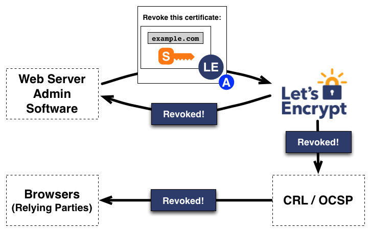
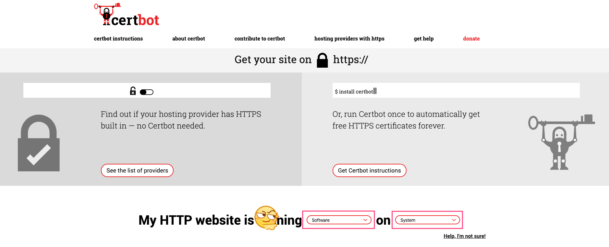
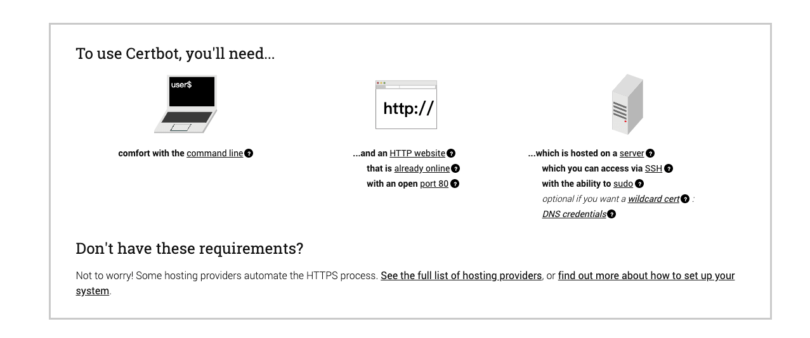
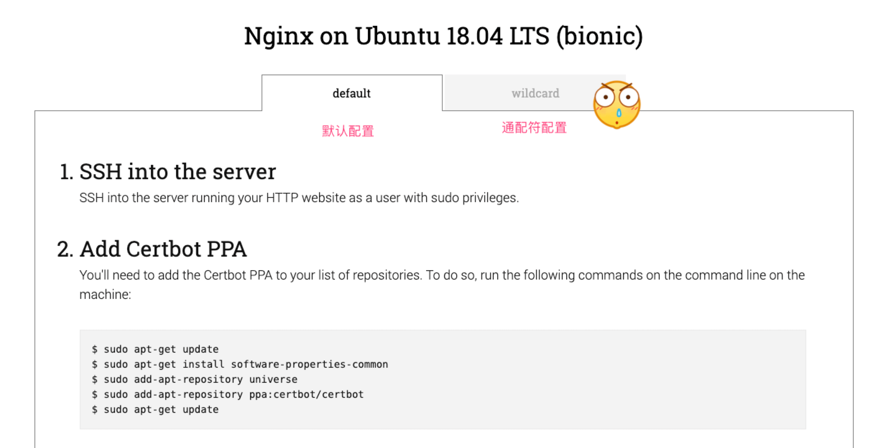

通过促进 HTTPS 的广泛采用，来创建一个更加安全和尊重隐私的 Web 环境。
为了在您的网站上启用 HTTPS 协议，您需要从证书颁发机构(CA)那里获取证书，而 Let's Encrypt 就是一个 CA 证书的颁发机构。想要从 Let's Encrypt 获取您网站域名的证书，您必须证明您对域名的实际控制权。即如果你通过新网购买的域名，就可以在新网的管理界面看到你自己购买的域名，您可以在您的 Web 主机上运行使用 ACME 协议的软件来获取 Let's Encrypt 证书。
为了找出最适合您获取证书的方法，您需要知道您是否拥有服务器的命令行访问权限，即称为 SSH 访问权限。如果您仅使用控制面板管理您的网站，您很有可能没有命令行访问权限，您可以联系您的托管服务提供商确认。
Let's Encrypt 是一个于 2015 年推出的数字证书认证机构，将通过旨在消除当前手动创建和安装证书的复杂过程的自动化流程，为安全网站提供免费的 SSL/TLS 证书。这是由 互联网安全研究小组 这一个公益组织提供的服务，主要赞助商包括 电子前哨基金会，Mozilla 基金会，Akamai 以及 Cisco 等公司。
2015 年 6 月，Let's Encrypt 得到了一个存储在硬件安全模块中的离线的 RSA 根证书。这个由 IdenTrust 证书签发机构交叉签名的根证书被用于签署两个证书。其中一个就是用于签发请求的证书，另一个则是保存在本地的证书，这个证书用于在上一个证书出问题时作备份证书之用。因为 IdenTrust 的 CA 根证书目前已被预置于主流浏览器中，所以 Let's Encrypt 签发的证书可以从项目开始就被识别并接受，甚至当用户的浏览器中没有信任 ISRG 的根证书时也可以。

1. 运作方式
域名认证 + 证书颁发和吊销
Let's Encrypt 和 ACME 协议的目标是使配置能够自动获取受信任浏览器的证书的 HTTPS 服务器成为可能。这是通过在 Web 服务器上运行证书管理软件(Agent)来达成的。为了理解该技术的工作原理，让我们来看一下使用支持 Let's Encrypt 的证书管理软件来配置 https://example.com/ 的流程。
该认证流程分为两步。首先，管理软件向证书颁发机构证明该服务器拥有域名的控制权。之后，该管理软件就可以向 Let's Encrypt 申请、续期或吊销该域名的证书。
- [1] 域名认证
Let's Encrypt 通过公钥识别服务器管理员。证书管理软件首次与 Let's Encrypt 交互时，会生成新的密钥对，并向 Let's Encrypt CA 证明服务器控制着一个或多个域名。这类似于创建帐户和向该帐户添加域名的传统证书颁发流程。
为了启动该过程，证书管理软件向 Let's Encrypt CA 询问它需要做什么才能证明它控制 example.com 这个域名。Let's Encrypt CA 将查看所请求的域名并发出一组或多组验证请求，这些验证请求就是管理软件可以用于证明对域名的控制权的不同方式。例如，CA 可能会让证书管理软件(Agent)选择： * 在 example.com 下配置 DNS 记录，或者 * 在 https://example.com/ 的已知 URI 下放置一个 HTTP 资源。
除了验证请求之外，Let's Encrypt CA 还会提供一个 nonce(一次性数字)要求证书管理软件使用私钥对它签名，以证明其对密钥对的控制权。

证书管理软件需要完成其中一项提供的验证请求，来证明自己的合法性。假设它能够完成上面的第二个任务：它在 https://example.com 站点的指定路径上创建了一个文件。证书管理软件还使用其私钥对提供的 nonce(一次性数字)进行签名。完成这些步骤后，证书管理软件会通知 CA 它已准备好完成验证。
然后，CA 的工作就是检查验证是否已经完成。CA 会验证 nonce 上的签名，并尝试从 Web 服务器下载该文件，并确保其具有 CA 需要的内容。

如果 nonce 上的签名有效，并且验证也成功完成，那么由公钥代表的证书管理软件将被授权对 example.com 进行证书管理。 我们将证书管理软件使用的密钥对称为 example.com 的授权密钥对。
- [2] 证书颁发和吊销
一旦代理拥有了授权公私钥，那么请求、续期和撤销证书就会变得很简单——只需发送证书管理消息并使用授权私钥对其进行签名。
为了获得该域名的证书，证书管理软件将创建一个 PKCS#10 证书签名请求(CSR)，要求 Let's Encrypt CA 为指定的公钥颁发 example.com 的证书。通常，CSR 中包含与 CSR 中的公钥对应的私钥的签名。证书管理软件还使用 example.com 的授权私钥签署整个 CSR，以便 Let's Encrypt CA 知道它已获得授权。
当 Let's Encrypt CA 收到用户端的请求时，它会验证这两个签名。如果一切都正常的话，CA 将为 CSR 中的公钥颁发 example.com 的证书，并将文件发送回证书管理软件。

申请吊销证书的流程类似。证书管理软件使用 example.com 的授权私钥签署一个吊销请求，Let's Encrypt CA 将验证该请求是否已被授权。如果已授权，则将吊销信息发布到正常的吊销通道(即 OCSP)中，以便浏览器等依赖方知道他们不应该接受这个已被吊销的证书。

2. 工具选择 - Certbot
推荐使用 Certbot 客户端
Let's Encrypt 使用 ACME 协议来验证您对给定域名的控制权并向您颁发证书。要获得 Let's Encrypt 证书，您需要选择一个要使用的 ACME 客户端软件。我建议大多数人从 Certbot 客户端开始。 它既可以仅为您获取证书，也可以帮助您安装证书。它易于使用，适用于许多操作系统，并且具有出色的文档。
如果 Certbot 不能满足您的需求，或者您只是想尝试其他软件，那么下面有更多的客户端可供选择，这些客户端按照编写所用的语言或是使用环境。
Bash
Docker
nginx
Python
3. 认证方式与速率限制
Let's Encrypt的认证方式有以下三种
申请证书要解决的一个关键问题就是，如何证明域名是你所拥有的？Let's Encrypt 提供了三种模式：HTTP、DNS、TLS-SNI。HTTP 模式和 DNS 模式各有优劣，适用于不同的场景。HTTP 模式不需要操作 DNS 记录，只需要新建一个文件就可以完成验证，带来的限制就是验证过程必须操作服务器；DNS 模式不需要操作服务器，只需添加 DNS 的 TXT 记录就行，缺点是必须登录到域名提供商的页面上修改 DNS 记录。不管是 HTTP 模式还是 DNS 模式，申请证书的操作都是可以在任意电脑上完成，申请完之后再将证书复制到服务器上。HTTP 模式验证过程需要操作服务器，DNS 模式验证过程需要操作 DNS。
[1] HTTP 模式 - 主机可以开放 80 或 443 端口的选择
- 就是
Let's Encrypt给你一个随机字符串，你需要在Web服务器的/.well-known/acme-challenge/服务路径下放置一个以该字符串命名的文件，当Let's Encrypt能够访问到这个文件时，证明你是这个域名的所有者。
- 就是
[2] DNS 模式 - 主机无法访问 80 或 443 端口时的选择
- 同样是
Let's Encrypt给你一个随机字符串，你需要以该字符串建立一个DNS的TXT记录，当Let's Encrypt查询域名的TXT记录时，发现得到的字符串一致，则证明你是这个域名的所有者。
- 同样是
[3] TLS-SNI 模式 - (基本废弃)
- 没有仔细研究过，似乎通过
SSL加密传输。http走的是80端口，tls-sni走的是443端口。由于当前的tls-sni似乎有漏洞，该模式一度遭禁用，所以不推荐采用此模式，本文也不加以讨论。
- 没有仔细研究过，似乎通过
[4] 购买域名证书
- 当然，这里我们也可以不使用免费的证书，而是使用自己购买的域名证书。
- 其配置就更为简单了，只需要下载对应证书存放到指定目录下，配置对应参数即可。
server {
ssl_certificate "/etc/ssl/certs/escapelife_com-ssl-bundle.crt";
ssl_trusted_certificate "/etc/ssl/certs/escapelife_com-trusted.crt";
ssl_certificate_key "/etc/ssl/private/STAR_escapelife_com.key";
......
}
Let's Encrypt虽然可以免费申请，但是有如下限制
- 每个注册域名允许颁发的证书数量限制为每周
30000张 - 重复证书限制为每周
30000张 - 每小时允许
60次验证失败 - 每个
IP地址注册账户数量限制为每个IP每3小时允许注册50个账户 - 对于
ACME v2，新订单限制为每个帐户每3小时1500个
4. 申请证书 - 直接申请
就是通过域名解析之后的对应 IP 地址的服务器，来直接申请证书。
在我们自己的博客上线之前，最好能够给我们的网站加上 HTTPS 的，一方面是为了安全，再就是为了显示有逼格。如果我们使用像 Cloudflare 这样的服务提供商，直接在其后台配置即可添加。如果是使用 Nginx 等服务器来运行自己的网站，推荐大家最好使用 Certbot 工具，其可以自动化来配置 SSL 证书和定时更新。如果我们是在域名解析的那个服务器配置 HTTPS 的话，配置证书的过程大约需要 5 分钟左右。
- 打开
https://certbot.eff.org网页 - 按照机器人下方的提示，选择对应的
Web服务软件和对应操作系统版本 - 然后，按照页面跳转之后的教程一步步操作，完成基本的配置即可



使用 Certbot 工具，其会自动检查到你的 nginx.conf 下的配置，把你所有的虚拟站点都列出来然后让你选择需要开启 https 的站点。简单的输入列表编号，用空格分隔符分开，然后使用 Certbot 工具就帮你下载证书并更新 nginx.conf 了。我们再次打开 nginx.conf 文件，发现文件中的 server 配置中添加了证书以及做了 301 的永久重定向。
这里建议配置为 HTTP2 协议，HTTP2 具有更快的 HTTPS 传输性能，非常值得开启。同时需要注意的是，Let's Encrypt 的证书有效期为 90 天，过期的话可以再次续签。
listen 443 ssl http2;
ssl_certificate /etc/letsencrypt/live/escapelife.com/fullchain.pem;
ssl_certificate_key /etc/letsencrypt/live/escapelife.com/privkey.pem;
include /etc/letsencrypt/options-ssl-nginx.conf;
# Redirect non-https traffic to https
if ($scheme != "https") {
return 301 https://$host$request_uri;
}
- 在新版本中，安装
Certbot工具已经使用snapd方式了 https://certbot.eff.org/lets-encrypt/ubuntubionic-nginx
# 1.安装snapd工具
$ sudo sudo apt update
$ sudo apt install snapd
$ sudo snap install core; sudo snap refresh core
# 2.安装Certbot工具
$ sudo snap install --classic certbot
$ sudo ln -s /snap/bin/certbot /usr/bin/certbot
# 3.获取证书并自动配置Nginx服务
$ sudo certbot --nginx
# 3.仅仅获取证书后续自行配置
$ sudo certbot certonly --nginx
# 3.指定获取证书的域名
$ sudo certbot --nginx -d example.com -d www.example.com
# 4.测试证书自动更新
$ sudo certbot renew --dry-run
# 5.证书到期前自动更新 - crontab
# 配置位置: /etc/crontab/ or /etc/cron.*/*
0 0 * * * /usr/bin/certbot renew --force-renewal
0 1 * * * /usr/sbin/service nginx restart
# 6. 确认配置成功
访问你的网站地址，然后查看是否已经添加上了HTTPS的标识了。
- 这里主要介绍，具体的获取证书的过程(
blog.escapelife.com)。 - 可能你在配置和执行的过程中会提示不同的信息，但是大致流程都是一致的。
# 1.获取证书并自动配置Nginx服务
# ------------------------------------
[root@localhost ~]# certbot --nginx
Saving debug log to /var/log/letsencrypt/letsencrypt.log
Plugins selected: Authenticator nginx, Installer nginx
Enter email address (used for urgent renewal and security notices) (Enter 'c' to
cancel): escapelife@gmail.com
Starting new HTTPS connection (1): acme-v02.api.letsencrypt.org
- - - - - - - - - - - - - - - - - - - - - - - - - - - - - - - - - - - - - - - -
Please read the Terms of Service at
https://letsencrypt.org/documents/LE-SA-v1.2-November-15-2017.pdf. You must
agree in order to register with the ACME server at
https://acme-v02.api.letsencrypt.org/directory
- - - - - - - - - - - - - - - - - - - - - - - - - - - - - - - - - - - - - - - -
(A)gree/(C)ancel: a # 同意并接受
- - - - - - - - - - - - - - - - - - - - - - - - - - - - - - - - - - - - - - - -
Would you be willing to share your email address with the Electronic Frontier
Foundation, a founding partner of the Let's Encrypt project and the non-profit
organization that develops Certbot? We'd like to send you email about our work
encrypting the web, EFF news, campaigns, and ways to support digital freedom.
- - - - - - - - - - - - - - - - - - - - - - - - - - - - - - - - - - - - - - - -
(Y)es/(N)o: y # 是否需要接受邮件通知
Starting new HTTPS connection (1): supporters.eff.org
No names were found in your configuration files. Please enter in your domain
name(s) (comma and/or space separated) (Enter 'c' to cancel): blog.escapelife.com
Obtaining a new certificate
Performing the following challenges:
http-01 challenge for blog.escapelife.com
Waiting for verification...
Cleaning up challenges
Resetting dropped connection: acme-v02.api.letsencrypt.org
Deploying Certificate to VirtualHost /etc/nginx/nginx.conf
Please choose whether or not to redirect HTTP traffic to HTTPS, removing HTTP access.
- - - - - - - - - - - - - - - - - - - - - - - - - - - - - - - - - - - - - - - -
1: No redirect - Make no further changes to the webserver configuration.
2: Redirect - Make all requests redirect to secure HTTPS access. Choose this for
new sites, or if you're confident your site works on HTTPS. You can undo this
change by editing your web server's configuration.
- - - - - - - - - - - - - - - - - - - - - - - - - - - - - - - - - - - - - - - -
Select the appropriate number [1-2] then [enter] (press 'c' to cancel): 2 # 选择模式
Redirecting all traffic on port 80 to ssl in /etc/nginx/nginx.conf
- - - - - - - - - - - - - - - - - - - - - - - - - - - - - - - - - - - - - - - -
Congratulations! You have successfully enabled https://blog.escapelife.com
You should test your configuration at:
https://www.ssllabs.com/ssltest/analyze.html?d=blog.escapelife.com
- - - - - - - - - - - - - - - - - - - - - - - - - - - - - - - - - - - - - - - -
IMPORTANT NOTES:
- Congratulations! Your certificate and chain have been saved at:
/etc/letsencrypt/live/bohr.escapelife.com/fullchain.pem
Your key file has been saved at:
/etc/letsencrypt/live/bohr.escapelife.com/privkey.pem
Your cert will expire on 2019-07-25. To obtain a new or tweaked
version of this certificate in the future, simply run certbot again
with the "certonly" option. To non-interactively renew *all* of
your certificates, run "certbot renew"
- Your account credentials have been saved in your Certbot
configuration directory at /etc/letsencrypt. You should make a
secure backup of this folder now. This configuration directory will
also contain certificates and private keys obtained by Certbot so
making regular backups of this folder is ideal.
- If you like Certbot, please consider supporting our work by:
Donating to ISRG / Let's Encrypt: https://letsencrypt.org/donate
Donating to EFF: https://eff.org/donate-le
5. 申请证书 - DNS 认证
就是通过 DNS 的方式来认证对该域名的合法性，从而申请证书。
我们在使用 letsencrypt 获取免费的 HTTPS 证书的时候，letsencrypt 需要对域名进行验证。默认情况下它的验证方式是，**certbot 工具在 web 目录的根目录下放置一个文件，然后 letsencrypt 的服务器通过域名来访问这个文件，来验证你申请的域名是属于你的。**
有时候我们想为内网的某台主机设置
HTTPS加密，因为内网的主机无法被letsencrypt的服务器访问到，所以运行sudo certbot certonly --nginx命令生成证书的时候就会出现Connection refused的情况。还有就是，一般情况下国内的网络运营商都会屏蔽掉
80、443这两个端口，所以大部分教程中的方法都会失效。
为了解决上述问题，我们可以更改验证方式，通过校验域名的 TXT 记录来验证你申请的域名是属于你的，从而获取证书。
# 命令行的方式获取证书
$ sudo certbot certonly --manual \
--preferred-challenges=dns \
--email escapelife@gmail.com \
--server https://acme-v02.api.letsencrypt.org/directory \
-d *.blog.escapelife.com -d blog.escapelife.com
# 上面命令的输出交互式信息
# 进行DNS认证时，在输出KEY的时候需要修改DNS的TXT记录，完成之后点击回车即可
# 解析类型为: TXT
# 主机记录为: _acme-challenge.blog.escapelife.com
# 记录值则为: 74H12USt......2345g6888
Saving debug log to /var/log/letsencrypt/letsencrypt.log
Plugins selected: Authenticator manual, Installer None
Starting new HTTPS connection (1): acme-v02.api.letsencrypt.org
Obtaining a new certificate
Performing the following challenges:
dns-01 challenge for blog.escapelife.com
- - - - - - - - - - - - - - - - - - - - - - - - - - - - - - - - - - - - - - - -
NOTE: The IP of this machine will be publicly logged as having requested this
certificate. If you're running certbot in manual mode on a machine that is not
your server, please ensure you're okay with that.
Are you OK with your IP being logged?
- - - - - - - - - - - - - - - - - - - - - - - - - - - - - - - - - - - - - - - -
(Y)es/(N)o: y
- - - - - - - - - - - - - - - - - - - - - - - - - - - - - - - - - - - - - - - -
Please deploy a DNS TXT record under the name
_acme-challenge.blog.escapelife.com with the following value:
74H12USt......2345g6888
Before continuing, verify the record is deployed.
- - - - - - - - - - - - - - - - - - - - - - - - - - - - - - - - - - - - - - - -
Press Enter to Continue
Waiting for verification...
Resetting dropped connection: acme-v02.api.letsencrypt.org
Cleaning up challenges
IMPORTANT NOTES:
- Congratulations! Your certificate and chain have been saved at:
/etc/letsencrypt/live/blog.escapelife.com/fullchain.pem
Your key file has been saved at:
/etc/letsencrypt/live/blog.escapelife.com/privkey.pem
Your cert will expire on 2020-05-18. To obtain a new or tweaked
version of this certificate in the future, simply run certbot
again. To non-interactively renew *all* of your certificates, run
"certbot renew"
- If you like Certbot, please consider supporting our work by:
Donating to ISRG / Let's Encrypt: https://letsencrypt.org/donate
Donating to EFF: https://eff.org/donate-le
# 执行完成之后会在如下目录下得到对应证书
[root@localhost ~]# ll /etc/letsencrypt/live/
drwxr-xr-x 2 root root 93 Feb 18 23:02 blog.escapelife.com
-rw-r--r-- 1 root root 740 Feb 18 23:02 README
# 证书会被存储到如下配置
[root@localhost ~]# ll /etc/letsencrypt/live/blog.escapelife.com/
lrwxrwxrwx 1 root root 38 Feb 18 23:02 cert.pem -> ../../archive/blog.escapelife.com/cert1.pem
lrwxrwxrwx 1 root root 39 Feb 18 23:02 chain.pem -> ../../archive/blog.escapelife.com/chain1.pem
lrwxrwxrwx 1 root root 43 Feb 18 23:02 fullchain.pem -> ../../archive/blog.escapelife.com/fullchain1.pem
lrwxrwxrwx 1 root root 41 Feb 18 23:02 privkey.pem -> ../../archive/blog.escapelife.com/privkey1.pem
-rw-r--r-- 1 root root 692 Feb 18 23:02 README
- 得到上述信息，则表示证书已经生成了。
- 我们现在需要做的就是，等待
DNS解析成功，然后配置Nginx配置即可。
$ dig -t TXT _acme-challenge.blog.escapelife.com
; <<>> DiG 9.9.4-RedHat-9.9.4-50.el7 <<>> -t TXT _acme-challenge.blog.escapelife.com
;; global options: +cmd
;; Got answer:
;; ->>HEADER<<- opcode: QUERY, status: NOERROR, id: 61108
;; flags: qr rd ra; QUERY: 1, ANSWER: 1, AUTHORITY: 0, ADDITIONAL: 1
;; OPT PSEUDOSECTION:
; EDNS: version: 0, flags:; udp: 512
;; QUESTION SECTION:
;_acme-challenge.blog.escapelife.com. IN TXT
;; ANSWER SECTION:
_acme-challenge.blog.escapelife.com. 299 IN TXT "74H12USt......2345g6888"
;; Query time: 98 msec
;; SERVER: 8.8.8.8#53(8.8.8.8)
;; WHEN: Tue Feb 18 23:10:39 CST 2020
;; MSG SIZE rcvd: 115
- 当然，还可以使用
docker申请letsencrypt证书的好处就是不需要在宿主机上安装依赖，命令如下所示。
# 用docker申请letsencrypt通配符证书
docker run -it --rm \
--name certbot \
-v /mnt/letsencrypt:/etc/letsencrypt \
-v /mnt/bak/letsencrypt:/var/lib/letsencrypt \
certbot/certbot \
certonly --manual --agree-tos \
--server https://acme-v02.api.letsencrypt.org/directory \
--preferred-challenges dns \
-d *.blog.escapelife.com -d blog.escapelife.com
# -d *.example.com -d example.com
# -v: 挂载目录; certbot申请到的或备份的证书会放在这两个目录
# --manual: 交互模式
# --agree-tos: 同意服务协议
# --server: 指定使用acmev2协议的服务器地址; 因为通配符证书的申请需要这个协议
# -–preferred-challenges: 使用dns检验来证明你拥有这个域名
# -d: 指定了需要申请证书的通配符域名，根域名要额外再写一次
6. 配置文件 - nginx.conf
展示配置 HTTPS 的 Nginx 配置文件:
nginx.conf
- 我们这里配置的是单个子域名的形式 -
blog.escapelife.com。 - 如果我们需要泛域名解析的话，在配置
certbot的时候选择wildcard *进行配置。 - 然后，申请、使用、配置证书的时候都是用泛域名的形式，即可。
# Generated by nginxconfig.io
# https://www.digitalocean.com/community/tools/nginx#?0.redirect=false&0.http2=false&0.hsts=false&0.php=false&0.root=false&gzip=false&file_structure=unified
user www-data;
pid /run/nginx.pid;
worker_processes auto;
worker_rlimit_nofile 65535;
events {
multi_accept on;
worker_connections 65535;
}
http {
charset utf-8;
sendfile on;
tcp_nopush on;
tcp_nodelay on;
server_tokens off;
log_not_found off;
types_hash_max_size 2048;
client_max_body_size 16M;
# MIME
include mime.types;
default_type application/octet-stream;
# logging
access_log /var/log/nginx/access.log;
error_log /var/log/nginx/error.log warn;
# SSL
ssl_session_timeout 1d;
ssl_session_cache shared:SSL:10m;
ssl_session_tickets off;
# Diffie-Hellman parameter for DHE ciphersuites
ssl_dhparam /etc/nginx/dhparam.pem;
# Mozilla Intermediate configuration
ssl_protocols TLSv1.2 TLSv1.3;
ssl_ciphers ECDHE-ECDSA-AES128-GCM-SHA256:ECDHE-RSA-AES128-GCM-SHA256:ECDHE-ECDSA-AES256-GCM-SHA384:ECDHE-RSA-AES256-GCM-SHA384:ECDHE-ECDSA-CHACHA20-POLY1305:ECDHE-RSA-CHACHA20-POLY1305:DHE-RSA-AES128-GCM-SHA256:DHE-RSA-AES256-GCM-SHA384;
# OCSP Stapling
ssl_stapling on;
ssl_stapling_verify on;
resolver 1.1.1.1 1.0.0.1 8.8.8.8 8.8.4.4 208.67.222.222 208.67.220.220 valid=60s;
resolver_timeout 2s;
# load configs
include /etc/nginx/conf.d/*.conf;
# blog.escapelife.com
server {
listen 443 ssl;
listen [::]:443 ssl;
server_name blog.escapelife.com;
# SSL
ssl_certificate /etc/letsencrypt/live/blog.escapelife.com/fullchain.pem; # managed by Certbot
ssl_certificate_key /etc/letsencrypt/live/blog.escapelife.com/privkey.pem; # managed by Certbot
ssl_trusted_certificate /etc/letsencrypt/live/blog.escapelife.com/chain.pem;
include /etc/letsencrypt/options-ssl-nginx.conf; # managed by Certbot
# security headers
add_header X-Frame-Options "SAMEORIGIN" always;
add_header X-XSS-Protection "1; mode=block" always;
add_header X-Content-Type-Options "nosniff" always;
add_header Referrer-Policy "no-referrer-when-downgrade" always;
add_header Content-Security-Policy "default-src 'self' http: https: data: blob: 'unsafe-inline'" always;
# . files
location ~ /\.(?!well-known) {
deny all;
}
# favicon.ico
location = /favicon.ico {
log_not_found off;
access_log off;
}
# robots.txt
location = /robots.txt {
log_not_found off;
access_log off;
}
}
# HTTP redirect
server {
listen 80;
listen [::]:80;
server_name blog.escapelife.com;
# ACME-challenge
location ^~ /.well-known/acme-challenge/ {
root /var/www/_letsencrypt;
}
location / {
return 301 https://blog.escapelife.com$request_uri;
}
}
}
7. 参考文档
授人玫瑰，手有余香！